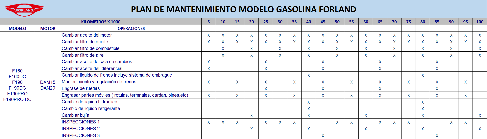
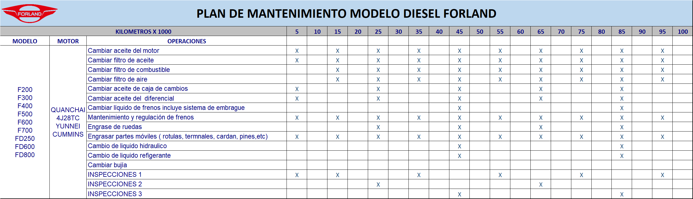

Plan de Mantenimiento Modelo Gasolina FORLAND

1.- Este plan comprende las operaciones básicas de mantenimiento, para más detalles es necesario consultar el manual de servicio técnico.
2.- Se recomienda efectuar alineación y balanceo una vez al año o cada 15.000 Km., lo que se cumpla primero.
3.- En terrenos polvorientos se debe recomendar cambiar filtro de aire cada 5.000 Km..
4.- Cada 90,000 km se recomienda limpiar tanque de combustible.
Plan de Mantenimiento Modelo Diesel FORLAND

1.- Este plan comprende las operaciones básicas de mantenimiento, para más detalles es necesario consultar el manual de servicio técnico.
2.- Se recomienda efectuar alineación y balanceo una vez al año o cada 15.000 Km., lo que se cumpla primero.
3.- En terrenos polvorientos se debe recomendar cambiar filtro de aire cada 5.000 Km..
4.- Cada 90,000 km se recomienda limpiar tanque de combustible.
Los camiones ligeros de diesel FORLAND pueden recibir un mantenimiento rutinario cada 10,000 Km.